Chapitre C03 — Dynamique du solide
Partie 1 — Cours
1. Introduction — référentiels, PFD du point matériel
La dynamique étudie les relations entre les mouvements d'un solide et leurs causes (les actions mécaniques) : c'est le carrefour entre la cinématique et la statique. Deux problématiques types : les efforts sont connus et on cherche le mouvement, ou le mouvement est imposé et on cherche les actions mécaniques qu'il engendre (dimensionnement d'actionneur, tenue de pièce en accélération...).
2. PFD du solide — torseur dynamique
Un solide \(S\) est modélisé comme un ensemble continu de points matériels \(M\) affectés d'une masse élémentaire \(dm\). On applique le PFD à chaque \(dm\), puis on intègre sur tout le solide.
2.1 Théorème de la résultante dynamique
2.2 Théorème du moment dynamique
2.3 Torseur dynamique
2.4 Cas d'un ensemble de solides
2.5 PFD dans un référentiel non galiléen \(R_{ng}\)
3. Torseur cinétique
3.1 Relation entre torseur cinétique et torseur dynamique
3.2 Calcul pratique du moment cinétique — l'opérateur d'inertie
4. L'opérateur d'inertie
| Moments d'inertie (kg·m²) | Produits d'inertie (kg·m²) |
|---|---|
| \(A=\displaystyle\int_S(y^2+z^2)\,dm\) | \(D=\displaystyle\int_S yz\,dm\) |
| \(B=\displaystyle\int_S(x^2+z^2)\,dm\) | \(E=\displaystyle\int_S xz\,dm\) |
| \(C=\displaystyle\int_S(x^2+y^2)\,dm\) | \(F=\displaystyle\int_S xy\,dm\) |
L'opérateur d'inertie décrit la répartition des masses du solide autour du point \(A\). Un moment d'inertie est toujours positif (nul seulement pour un solide infiniment fin selon l'axe considéré) et est minimal pour un axe passant par le centre d'inertie \(G\).
4.1 Moment d'inertie par rapport à un axe
4.2 Base propre d'inertie, simplifications par symétrie
- Plan de symétrie \((O,\vec x_s,\vec y_s)\) : les produits d'inertie impliquant \(z_s\) sont nuls (\(D=E=0\)) → \(\bar{\bar I}_{(O,S)}=\begin{pmatrix}A&-F&0\\-F&B&0\\0&0&C\end{pmatrix}\).
- Deux plans de symétrie perpendiculaires : tous les produits nuls, matrice diagonale \(\mathrm{diag}(A,B,C)\).
- Axe de révolution \((O,\vec z_s)\) : matrice diagonale avec en plus \(A=B\) (isotropie transverse), et \(A=B=\dfrac{C}{2}+\displaystyle\int_S z^2\,dm\).
4.3 Théorème de Huygens
5. Cas particuliers classiques (formes toutes faites du PFD)
Au centre de gravité \(G\) : \(\overrightarrow{\delta_{G\in S/R_g}}=\vec0\) (démonstration : intégrale de \(\overrightarrow{GM}\wedge\overrightarrow{\Gamma_{G\in S/R_g}}\,dm\), le vecteur accélération sort de l'intégrale car identique en tout point, puis \(\int\overrightarrow{GM}dm=\vec0\) par définition de \(G\)). En un point quelconque \(A\) lié à \(S\) :
En notant \(\theta\) l'angle de rotation, \(J\) le moment d'inertie de \(S\) par rapport à \((O,\vec z)\) (axe supposé principal d'inertie en \(O\)) :
En rotation, l'inertie dépend de la valeur ET de la répartition de la masse (le moment d'inertie \(J\)) — c'est la différence fondamentale avec la translation, et la raison d'être de l'opérateur d'inertie.
6. Méthodologie de résolution
- Graphe de structure : repérer les liaisons entre sous-ensembles et les actions mécaniques extérieures.
- Isolement : choisir le solide (ou l'ensemble de solides) \(S\) étudié — définit ce qui est extérieur/intérieur.
- Inventaire des actions mécaniques extérieures (IAME) : comme en statique (actions à distance, actions de contact).
- Écriture du PFD : \(\{\mathcal T_{ext\to S}\}_A=\{\mathcal D_{S/R_g}\}_A\).
- Détermination du torseur dynamique — l'étape la plus calculatoire, surtout pour le moment.
Deux méthodes selon la donnée disponible :
- Matrice d'inertie connue en \(A\) : moment cinétique \(\vec\sigma_A=\bar{\bar I}_{(A,S)}.\vec\Omega+m\overrightarrow{AG}\wedge\vec V_A\), puis \(\vec\delta_A=[\tfrac{d\vec\sigma_A}{dt}]_{R_g}+\vec V_{A/R_g}\wedge m\vec V_G\).
- Matrice connue en \(G\) : soit on la transporte en \(A\) par Huygens (retombe sur le cas précédent), soit on calcule \(\vec\sigma_G=\bar{\bar I}_{(G,S)}.\vec\Omega\), on transporte en \(A\) (\(\vec\sigma_A=\vec\sigma_G+\overrightarrow{AG}\wedge m\vec V_G\)), puis on dérive.
- Écriture des équations / résolution : au maximum 6 équations scalaires, au même point et dans la même base. Si la résolution n'aboutit pas : hypothèses simplificatrices ou isolement d'un autre sous-système.
7. Conseils pratiques de calcul
Correction des exercices du TD « Dynamique du solide (C03) », dans l'ordre du TD : calcul de matrices d'inertie (section 1), lecteur DVD (2), arbre de navire (3), éolienne bipale (4), régulateur centrifuge (5), équilibreuse (6). Les exercices 1, 2, 3, 5 et 6 ont une correction pas à pas sur leur page dédiée ; l'éolienne (section 4) est résolue ici avec la méthode du cours, sans corrigé officiel. Méthode et formules : voir le résumé de cours.
Partie 2 — Correction des exercices de TD
Calcul de matrices d'inertie : correction détaillée
Premier exercice du TD « Dynamique du solide (C03) », dans l'ordre du TD : barre, rectangle mince, quart de disque, cylindre plein, cylindre percé. Pour chaque question : l'énoncé en image, la démarche, le calcul complet, puis les résultats du corrigé. L'objectif est de savoir calculer une matrice d'inertie, ce qui sert ensuite dans tout le PFD.
1. Avant de commencer : l'essentiel
L'opérateur d'inertie
Pour un solide \(S\) de masse \(m\), l'opérateur d'inertie en un point \(P\), exprimé dans une base \(b(\vec x,\vec y,\vec z)\), est une matrice symétrique :
\[\bar{\bar I}(P,S)=\begin{pmatrix}A&-F&-E\\-F&B&-D\\-E&-D&C\end{pmatrix}_b,\qquad A=\int_S(y^2+z^2)\,dm,\quad B=\int_S(x^2+z^2)\,dm,\quad C=\int_S(x^2+y^2)\,dm\]Les termes hors diagonale sont \(F=\int_S xy\,dm\), \(E=\int_S xz\,dm\), \(D=\int_S yz\,dm\), avec le signe moins devant dans la matrice.
Trois règles qui simplifient presque tout
- Symétrie par rapport à un plan \((G,\vec x,\vec y)\) : les termes \(E\) et \(D\) sont nuls (les masses se compensent).
- Solide de révolution d'axe \(\vec z\) : \(A=B\), et la matrice est diagonale.
- Théorème de Huygens : pour passer du centre de masse \(G\) à un point \(P\) quelconque, avec \(\overrightarrow{PG}=(d_x,d_y,d_z)\) : \(\bar{\bar I}(P,S)=\bar{\bar I}(G,S)+m\begin{pmatrix}d_y^2+d_z^2&-d_xd_y&-d_xd_z\\-d_xd_y&d_x^2+d_z^2&-d_yd_z\\-d_xd_z&-d_yd_z&d_x^2+d_y^2\end{pmatrix}\).
2. Exercice 1 — Barre
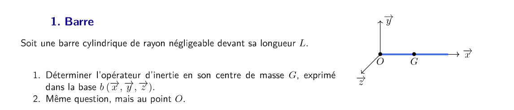
Q1Opérateur d'inertie en \(G\)
Démarche
- Où est la matière ? Elle est uniquement sur l'axe \((G,\vec x)\). Donc \(y\) et \(z\) sont nuls partout : \(y^2\), \(z^2\), \(yz\), \(xy\), \(xz\) sont nuls.
- Conséquence : \(A=0\) (car \(A=\int(y^2+z^2)dm=0\)), et \(D=E=F=0\).
- Symétrie : \((G,\vec y)\) et \((G,\vec z)\) jouent le même rôle, donc \(B=C\).
- Calcul de \(B\) : \(B=\int x^2dm\) avec \(dm=\dfrac{m}{L}dx\), \(x\in[-L/2,L/2]\).
Q2Opérateur d'inertie en \(O\)
Démarche
- On garde le résultat en \(G\) et on applique Huygens. Ici \(\overrightarrow{OG}=\dfrac{L}{2}\vec x\), donc \(d_x=L/2\), \(d_y=d_z=0\).
- Huygens ajoute \(m(d_x^2+d_z^2)\) à \(B\) (axe \(\vec y\)) et \(m(d_x^2+d_y^2)\) à \(C\) (axe \(\vec z\)). Ici \(d_z=0\) et \(d_y=0\), donc on ajoute \(m\,d_x^2\) à \(B\) et à \(C\).
3. Exercice 2 — Rectangle mince
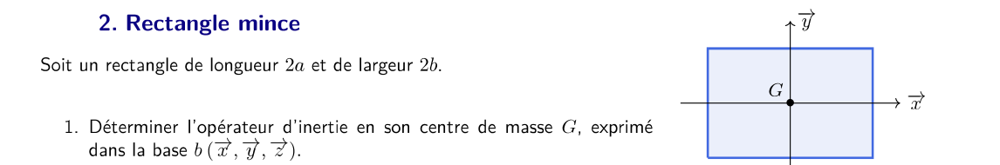
Q1Opérateur d'inertie en \(G\)
Démarche
- Symétries : \(\vec x\) et \(\vec y\) sont axes de symétrie, donc la matrice est diagonale (\(D=E=F=0\)).
- Matière plane : le rectangle est dans le plan \((G,\vec x,\vec y)\), donc \(z=0\) partout. D'où \(C=\int(x^2+y^2)dm=A+B\).
- Surface : \(dm=\sigma\,dS\) avec \(\sigma=\dfrac{m}{4ab}\) (aire \(4ab\)).
- Calcul de \(A=\int y^2dm\), avec \(y\in[-b,b]\) et \(x\in[-a,a]\).
Par analogie (on échange \(x\) et \(y\)) : \(B=\dfrac{ma^2}{3}\). Puis :
\[C=A+B=\dfrac{m(a^2+b^2)}{3}\]4. Exercice 3 — Quart de disque
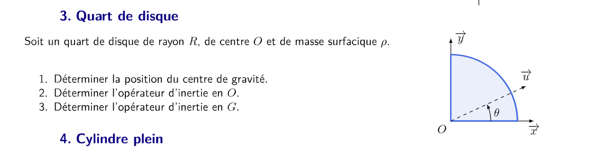
Q1Position du centre de gravité
Démarche
- Définition : \(\overrightarrow{OG}=\dfrac{1}{m}\int_S\overrightarrow{OM}\,dm\).
- Par symétrie (la figure est symétrique par rapport à la droite \(y=x\)), \(x_G=y_G\).
- On calcule \(x_G\) en coordonnées polaires : \(x=r\cos\theta\), \(dS=r\,dr\,d\theta\), \(\theta\in[0,\pi/2]\), \(r\in[0,R]\).
Masse : \(m=\rho\dfrac{\pi R^2}{4}\). Puis :
\[x_G=\dfrac{1}{m}\int_0^{\pi/2}\!\!\int_0^R (r\cos\theta)\,\rho\,r\,dr\,d\theta=\dfrac{\rho}{m}\Big[\dfrac{R^3}{3}\Big]\Big[\sin\theta\Big]_0^{\pi/2}=\dfrac{\rho R^3}{3m}=\dfrac{\rho R^3}{3\rho\pi R^2/4}=\dfrac{4R}{3\pi}\] \[\overrightarrow{OG}=\dfrac{4R}{3\pi}(\vec x+\vec y)\]Q2Opérateur d'inertie en \(O\)
Démarche
- La pièce est une plaque d'épaisseur nulle : \(C=A+B\).
- \(B=\int x^2dm\) : en polaires, \(x^2=r^2\cos^2\theta\), donc on intègre \(\cos^2\theta=\dfrac{1+\cos2\theta}{2}\).
- \(F=\int xy\,dm\) : on a \(\cos\theta\sin\theta=\dfrac{\sin2\theta}{2}\) et l'intégrale en \(\theta\) de \(\sin2\theta\) donne un terme \(\cos\) qui se simplifie.
Le terme hors diagonale est \(-F\) avec \(F=\dfrac{mR^2}{2\pi}\) : le signe moins vient de la convention de la matrice.
Q3Opérateur d'inertie en \(G\)
Démarche
- On applique Huygens depuis \(O\) vers \(G\), avec \(\overrightarrow{OG}=d(\vec x+\vec y)\), \(d=\dfrac{4R}{3\pi}\). Donc \(\overrightarrow{GO}=(-d,-d,0)\).
- Les produits \(d_xd_y=d^2=\dfrac{16R^2}{9\pi^2}\) apparaissent hors diagonale, et \(d_y^2+d_z^2=d^2\), \(d_x^2+d_z^2=d^2\), \(d_x^2+d_y^2=2d^2\).
- On écrit \(\bar{\bar I}(G)=\bar{\bar I}(O)-m\,(\text{matrice de Huygens})\).
5. Exercice 4 — Cylindre plein
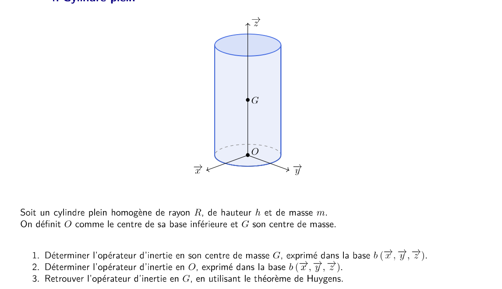
Q1Opérateur d'inertie en \(G\)
Démarche
- Révolution autour de \((O,\vec z)\) : \(A=B\), et la matrice est diagonale.
- Axe z : \(C=\int(x^2+y^2)dm=\int r^2dm\) (ici \(r\) est la distance à l'axe \(z\)).
- Axe x : \(A=\int(y^2+z^2)dm=\int y^2dm+\int z^2dm\). Par symétrie de révolution, \(\int y^2dm=\dfrac{C}{2}\) (car \(x^2+y^2\) se répartit également entre \(x\) et \(y\)). Donc \(A=\dfrac{C}{2}+\int z^2dm\).
Calcul de \(C\) : en cylindriques, \(dm=\dfrac{m}{\pi R^2h}r\,dr\,d\theta\,dz\), avec \(z\in[-h/2,h/2]\) (on part de \(G\)).
\[C=\dfrac{m}{\pi R^2h}\int_0^{2\pi}\!\!d\theta\int_0^R r^3dr\int_{-h/2}^{h/2}dz=\dfrac{m}{\pi R^2h}\cdot2\pi\cdot\dfrac{R^4}{4}\cdot h=\dfrac{mR^2}{2}\]Calcul de \(\int z^2dm\) (avec \(z\) mesuré depuis \(G\)) :
\[\int z^2dm=\dfrac{m}{h}\int_{-h/2}^{h/2}z^2\,dz=\dfrac{m}{h}\Big[\dfrac{z^3}{3}\Big]_{-h/2}^{h/2}=\dfrac{m}{h}\cdot\dfrac{h^3}{12}=\dfrac{mh^2}{12}\](La densité est uniforme en hauteur : \(dm=\dfrac{m}{h}dz\) une fois la section intégrée. Le rayon n'intervient pas ici.)
Donc \(A=\dfrac{C}{2}+\dfrac{mh^2}{12}=\dfrac{mR^2}{4}+\dfrac{mh^2}{12}\).
Q2Opérateur d'inertie en \(O\)
Démarche
- On reprend les mêmes calculs, mais avec \(z\) mesuré depuis \(O\) : \(z\in[0,h]\) au lieu de \([-h/2,h/2]\).
- \(C\) ne change pas (il ne dépend que de \(r\)) : \(C=\dfrac{mR^2}{2}\).
- \(\int z^2dm\) devient \(\dfrac{m}{h}\displaystyle\int_0^h z^2dz=\dfrac{mh^2}{3}\).
Q3Retrouver \(\bar{\bar I}(G,S)\) par Huygens
Démarche
- Le vecteur \(\overrightarrow{OG}=\dfrac{h}{2}\vec z\) : \(d_z=h/2\), \(d_x=d_y=0\).
- Huygens : seuls \(A\) et \(B\) changent, de \(m\,d_z^2=m\dfrac{h^2}{4}\). \(C\) ne change pas (l'axe \(z\) est parallèle au décalage).
On retrouve bien le résultat directement obtenu en \(G\) (Q1).
6. Exercice 5 — Cylindre percé
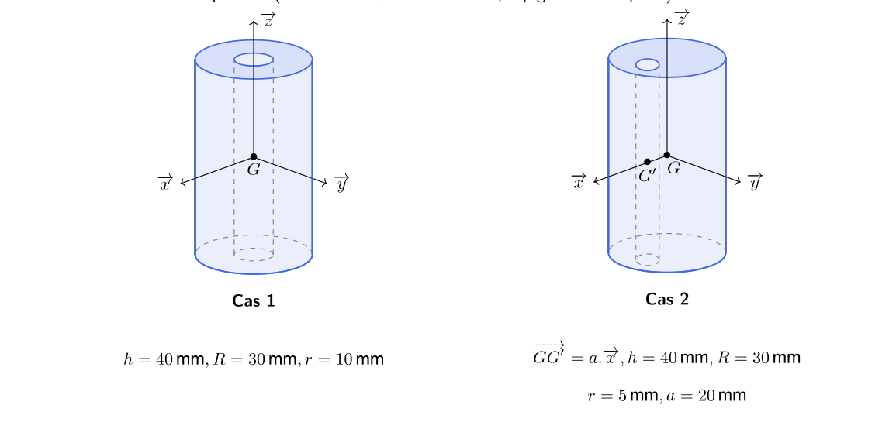
QOpérateur d'inertie en \(G\) : cas 1 (perçage centré) et cas 2 (perçage décalé)
Démarche (commune aux deux cas)
- Soustraction : le cylindre percé \(S\) est le cylindre plein \(P\) (rayon \(R\)) moins le cylindre \(C\) (rayon \(r\)) qu'on a enlevé. Donc \(\bar{\bar I}(G,S)=\bar{\bar I}(G,P)-\bar{\bar I}(G,C)\) pour les deux termes, avec les masses \(m_P\) et \(m_C\).
- Masses : \(m_P=\pi\rho hR^2\), \(m_C=\pi\rho hr^2\), donc \(m=m_P-m_C=\pi\rho h(R^2-r^2)\).
- Inerties du plein (Ex. 4) : \(I_{xx}=I_{yy}=\dfrac{m R^2}{4}+\dfrac{mh^2}{12}\), \(I_{zz}=\dfrac{mR^2}{2}\), à remplacer par \(m_P\) puis \(m_C\) (avec \(r\)).
Cas 1 (perçage centré). Les deux cylindres ont le même centre \(G\). On soustrait terme à terme :
\[A=\Big(\dfrac{m_PR^2}{4}+\dfrac{m_Ph^2}{12}\Big)-\Big(\dfrac{m_Cr^2}{4}+\dfrac{m_Ch^2}{12}\Big)=\dfrac{\pi\rho h(R^4-r^4)}{4}+\dfrac{\pi\rho h^3(R^2-r^2)}{12}\]En factorisant \(\pi\rho h(R^2-r^2)=m\) et en remarquant que \(R^4-r^4=(R^2-r^2)(R^2+r^2)\) :
\[A=B=\dfrac{m(R^2+r^2)}{4}+\dfrac{mh^2}{12}\qquad\qquad C=\dfrac{m(R^2+r^2)}{2}\]Cas 2 (perçage décalé de \(a\) selon \(\vec x\)). Le cylindre enlevé est centré en \(G'=G+a\vec x\). Il faut donc :
- calculer l'inertie du cylindre enlevé \(C\) en son propre centre \(G'\) (formules de l'Ex. 4 avec \(r\)) ;
- la ramener en \(G\) par Huygens : \(m_C\,a^2\) s'ajoute aux axes perpendiculaires à \(\overrightarrow{GG'}=a\vec x\), c'est-à-dire \(\vec y\) et \(\vec z\), mais pas \(\vec x\).
On obtient donc \(\bar{\bar I}(G,S)=\bar{\bar I}(G,P)-\bar{\bar I}(G',C)-m_C\begin{pmatrix}0&0&0\\0&a^2&0\\0&0&a^2\end{pmatrix}\), soit, avec \(m_C\,a^2=\dfrac{m\,r^2a^2}{R^2-r^2}\) :
\[A=\dfrac{m(R^2+r^2)}{4}+\dfrac{mh^2}{12}\qquad B=A-\dfrac{mr^2a^2}{R^2-r^2}\qquad C=\dfrac{m(R^2+r^2)}{2}-\dfrac{mr^2a^2}{R^2-r^2}\]Le terme \(\dfrac{mr^2a^2}{R^2-r^2}\) n'apparaît que dans \(B\) et \(C\) : le décalage est selon \(\vec x\), donc l'axe \(\vec x\) n'est pas affecté.
Cas 2 : \(m=857{,}65\) g, \(A=312{,}68\) kg·mm², \(B=302{,}6\) kg·mm², \(C=386{,}58\) kg·mm².
Ces valeurs supposent une masse volumique \(\rho\approx7\,800\) kg·m⁻³ : c'est celle qui reproduit \(m=784{,}14\) g avec \(\pi\rho h(R^2-r^2)\), \(h=40\) mm et \(R^2-r^2=800\) mm².
- Le corrigé écrit \(m_c=2\pi\rho hr^2\), probablement une coquille (à vérifier sur le PDF) : avec \(m_c=\pi\rho hr^2\) (aire d'un disque de rayon \(r\)), on retrouve bien \(m=m_P-m_c=\pi\rho h(R^2-r^2)\), qu'il utilise ensuite. Le calcul ci-dessus est fait avec \(\pi\rho hr^2\).
- Pour le cas 2, en recalculant \(B\) à partir de \(A=312{,}68\) : \(B=312{,}68-9{,}80\approx302{,}9\) kg·mm² (le corrigé écrit 302,6). C'est un écart d'arrondi, sans conséquence.
7. À retenir
- Barre : \(mL^2/12\) au centre, \(mL^2/3\) à l'extrémité.
- Plaque plane : \(C=A+B\). Plaque rectangulaire : \(A=mb^2/3\), \(B=ma^2/3\).
- Quart de disque : \(G\) à \(4R/(3\pi)\) selon \(x\) et \(y\). Les intégrales en polaires donnent \(\pi/4\) et \(1/2\).
- Cylindre : \(I_{zz}=mR^2/2\), \(I_{xx}=I_{yy}=mR^2/4+mh^2/12\) au centre (\(h^2/3\) à la base).
- Perçage : soustraction des deux cylindres ; décalage = Huygens sur les axes perpendiculaires.
Lecteur de DVD : correction détaillée
Un exercice du TD « Principe fondamental de la dynamique » (CPGE PT, S2I). Pour chaque question, on dit d'abord ce qu'elle demande, puis la démarche, puis le calcul complet. Les encadrés à droite donnent la méthode, la formule à retenir ou le piège à éviter.
1. Avant de commencer : l'essentiel en quelques lignes
Le principe fondamental de la dynamique (PFD)
Le PFD relie les actions qui agissent sur un objet à la façon dont il accélère. Il existe deux versions utiles ici :
- En translation (le chariot glisse) : la somme des forces est égale à la masse fois l'accélération, \(\sum \vec F = m\,\vec a\).
- En rotation autour d'un axe fixe (la vis tourne) : la somme des moments autour de cet axe est égale à l'inertie fois l'accélération angulaire, \(\sum M = I\,\ddot\theta\).
Les mots du TD
- Torseur de liaison : une liaison entre deux pièces transmet des actions. On les écrit sous forme de deux vecteurs : une résultante (forces \(X, Y, Z\)) et un moment (couples \(L, M, N\)). Les lettres sont les inconnues du problème.
- Liaison hélicoïdale : c'est une liaison « vis-écrou ». Quand la vis tourne d'un tour, l'écrou avance d'une distance appelée pas \(p\).
- Liaison glissière : une pièce ne peut que glisser le long d'un axe (ici les deux colonnes, direction \(\vec x_0\)).
- Liaison pivot : une pièce ne peut que tourner autour d'un axe.
Le système en une chaîne
(diode laser)
Le moteur fait tourner la vis. La vis fait avancer le chariot, qui porte la diode laser. Le chariot est guidé par deux colonnes fixées au bâti 0 : il ne peut donc que glisser, pas tourner.
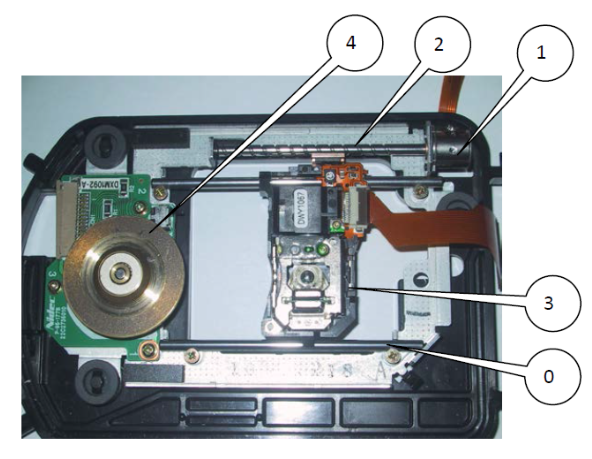
2. La démarche en 5 étapes
Toute la correction suit le même fil. Chaque étape produit une équation qu'on réutilise dans la suivante :
- Isoler le chariot 3 et appliquer le PFD en translation (questions 1 à 3). On obtient l'effort \(X_{23}=m_3\,a\).
- Isoler la vis 2 et appliquer le PFD en rotation (questions 4 à 6). On obtient \(C_m + L_{32} = I_{vis}\,\ddot\theta\).
- Relier translation et rotation grâce au pas de la liaison hélicoïdale (question 7).
- Éliminer les inconnues pour exprimer \(C_m\) en fonction de \(a\) et de \(p\) (question 8).
- Optimiser le pas (question 9), puis faire l'application numérique et choisir le moteur (questions 10 et 11).
3. Le modèle et les données
Le modèle (schéma de l'énoncé, hypothèses, données) est rappelé ici. Le schéma de l'énoncé est répété juste au-dessus de la correction de la question 1.
Hypothèses (à garder en tête)
- Les liaisons sont parfaites : pas de frottement.
- Le centre de gravité de la vis est sur l'axe de rotation.
- Le poids de la vis est négligé.
- Le couple moteur \(C_m\) est constant pendant le démarrage.
Données numériques
| Grandeur | Valeur | Signification |
|---|---|---|
| \(m_3\) | 10 g = \(0{,}01\) kg | masse du chariot (laser compris) |
| \(I_{vis}\) | \(4{,}2\cdot10^{-9}\) kg·m² | inertie de la vis autour de son axe (modèle SolidWorks) |
| \(p\) | à déterminer | pas de la vis (distance avancée par tour) |
| \(g\) | 9,81 m·s⁻² | pesanteur |
4. Correction question par question
Partie A — Le chariot 3 (questions 1 à 3)
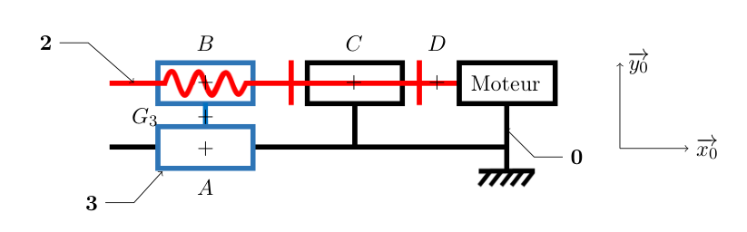
Q1 Quel est le mouvement de 3 par rapport à 0 ?
Démarche Le chariot est guidé par deux colonnes parallèles à \(\vec x_0\). Une pièce guidée ainsi ne peut que glisser le long de ces colonnes. Il suffit donc de donner la direction de ce glissement.
Q2 Établir l'inventaire des actions mécaniques extérieures sur 3.
Démarche
- Le poids du chariot, toujours présent, appliqué en son centre de gravité \(G_3\).
- La glissière avec le bâti 0, aux colonnes, au point \(A\).
- La liaison hélicoïdale avec la vis 2, au point \(B\).
- Pour chaque liaison, on met une inconnue par composante. Une liaison qui laisse libre un mouvement annule la composante correspondante : la glissière laisse le chariot glisser suivant \(\vec x_0\), donc il n'y a aucune force suivant \(\vec x_0\) venant de 0.
Q3 Appliquer le PFD à la pièce 3 (projection sur \(\vec x_0\) seulement).
Démarche
- PFD en résultante : \(\sum \vec F_{\text{ext}\to3}=m_3\,\vec a_{G_3\in3/0}\).
- L'accélération est suivant \(\vec x_0\) : \(\vec a = a\,\vec x_0\).
- On projette sur \(\vec x_0\). Le poids et \(Y, Z\) sont perpendiculaires à \(\vec x_0\) : leur projection est nulle. Il reste \(X_{23}\).
Ce que ça veut dire : avec \(a=128\) m·s⁻² (question 10), \(X_{23}=0{,}01\times128=1{,}28\) N. C'est l'effort que la vis doit exercer pour pousser le chariot.
Partie B — La vis 2 (questions 4 à 6)
Q4 Quel est le mouvement de 2 par rapport à 0 ?
Démarche La vis est posée sur son axe, dans le bâti, et ne fait que tourner (elle ne se déplace pas en translation). Son axe est \((D,\vec x_0)\).
Q5 Établir l'inventaire des actions mécaniques extérieures sur 2.
Démarche
- Moteur 1 → 2 en \(D\) : le moteur donne un couple \(C_m\) autour de \(\vec x_0\), sans force.
- Bâti 0 → 2 en \(C\) : c'est un pivot. Il laisse la rotation libre, donc il ne transmet pas de couple suivant \(\vec x_0\) (\(L_{02}=0\)).
- Chariot 3 → 2 en \(B\) : l'hélicoïdale. Elle transmet un effort axial et un couple axial \(L_{32}\).
Action-réaction : \(\{\tau_{3\to2}\}=-\{\tau_{2\to3}\}\). Donc \(L_{32}=-L_{23}\) et \(X_{32}=-X_{23}\).
Q6 Appliquer le PFD à la pièce 2 (moment en \(D\), projeté sur \(\vec x_0\)).
Démarche
- PFD en rotation autour d'un axe fixe : \(\sum M_{D,\text{ext}\to2}\cdot\vec x_0 = I_{vis}\,\ddot\theta\).
- On prend le moment en \(D\), point de l'axe de rotation. Un effort appliqué sur l'axe (au point \(B\) ou \(C\)) ne crée aucun moment suivant cet axe.
- Il ne reste donc que les couples axiaux : \(C_m\) (moteur) et \(L_{32}\) (hélicoïdale). Le pivot donne \(0\).
Partie C — Le lien entre translation et rotation (questions 7 et 8)
Q7 Relation entre \(X_{23}\), \(L_{23}\) et \(p\), puis entre \(\ddot\theta\), \(a\) et \(p\).
Démarche
- Avance du chariot : un tour de vis (\(\Delta\theta = 2\pi\)) fait avancer le chariot de \(p\). Donc un angle \(\theta\) donne une avance \(x=-\dfrac{p}{2\pi}\,\theta\). Le signe moins vient de la convention « pas à droite » du TD.
- Dérivées : on dérive une fois (vitesse), puis deux fois (accélération) : \(\dot x=-\dfrac{p}{2\pi}\dot\theta\) et \(a=-\dfrac{p}{2\pi}\ddot\theta\).
- Couple axial : dans une liaison hélicoïdale parfaite, la puissance développée est nulle. Cela impose que le couple axial et l'effort axial soient liés par le même rapport \(p/2\pi\). C'est le même principe que le tire-bouchon : tourner fait avancer, et pousser crée un couple.
Q8 En déduire une expression de \(C_m\) en fonction de \(I_{vis}\), \(m_3\), \(p\) et \(a\).
Démarche
- On part de la question 6 : \(C_m = I_{vis}\,\ddot\theta - L_{32}\).
- On remplace \(L_{32}=-L_{23}=\dfrac{p}{2\pi}X_{23}\) et \(X_{23}=m_3\,a\) (question 3) : \(L_{32}=\dfrac{p}{2\pi}m_3\,a\).
- On remplace \(\ddot\theta=-\dfrac{2\pi}{p}\,a\) (question 7).
- On regroupe les termes en \(a\).
Interprétation. Le couple est la somme de deux termes :
- \(\dfrac{2\pi I_{vis}}{p}\) : le couple pour faire tourner la vis elle-même ;
- \(\dfrac{p\,m_3}{2\pi}\) : le couple pour faire avancer la masse du chariot, « ramenée » sur l'arbre moteur. C'est le sens de \(I_{eq}\) : la masse qui avance se comporte, vue du moteur, comme une inertie supplémentaire.
Partie D — Le pas optimal (question 9)
Q9 Quelle valeur du pas \(p\) rend le couple moteur minimal ?
Démarche
- Seul \(p\) varie. \(a\), \(I_{vis}\) et \(m_3\) sont des constantes.
- On dérive \(|C_m|\) par rapport à \(p\) et on cherche où la dérivée s'annule (c'est la condition d'un extremum).
- On vérifie que c'est bien un minimum (dérivée seconde positive).
- On fait l'application numérique avec les unités du SI (mètres, kilogrammes).
La section 5 montre cette courbe : elle a bien un minimum en 4,07 mm.
Partie E — Application numérique (questions 10 et 11)
Q10 Calculer l'accélération \(a\).
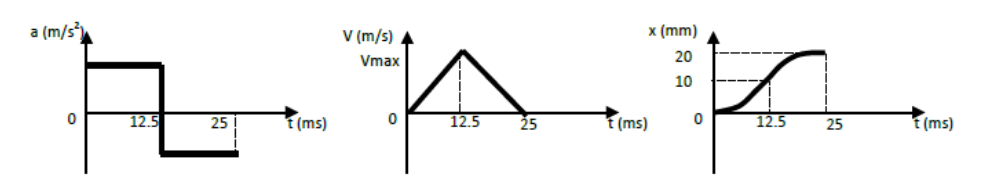
Démarche
- Lire le graphe de \(x(t)\) : à \(t=12{,}5\) ms, \(X=10\) mm.
- Le graphe de \(a(t)\) montre une accélération constante pendant la première moitié. Le chariot part de l'arrêt (\(x=0\), \(v=0\)). Donc \(x(t)=\tfrac12\,a\,t^2\).
- On isole \(a\).
Q11 Calculer \(C_m\) avec le pas réel \(3{,}6\) mm et conclure.
Démarche On reprend la formule de la question 8 et on remplace par les valeurs : \(p=3{,}6\cdot10^{-3}\) m, \(a=128\) m·s⁻², \(I_{vis}=4{,}2\cdot10^{-9}\) kg·m², \(m_3=0{,}01\) kg.
Conversion en g·cm (le catalogue moteur est en g·cm) : 1 g·cm = 9,81·10⁻⁵ N·m, donc \(1{,}67\cdot10^{-3}/9{,}81\cdot10^{-5}\approx 17\) g·cm.
Comparaison avec le pas optimal :
- Pour \(p=3{,}6\) mm : \(|C_m|=1{,}67\) N·mm.
- Pour \(p=4{,}07\) mm (optimal) : \(|C_m|=1{,}66\) N·mm.
- Écart : environ 0,8 %.
Choix du moteur (suite de la question 11)
Quel moteur du catalogue choisir ?
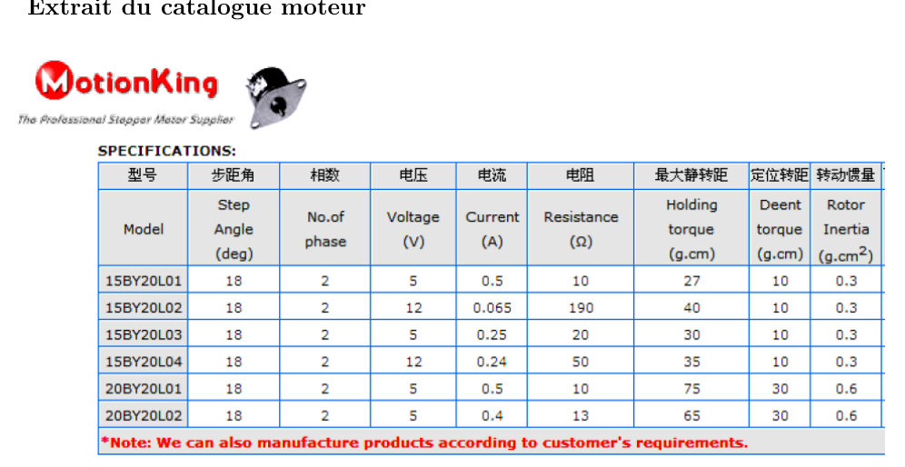
Démarche
- On élimine les moteurs alimentés en 12 V : le PC fournit 5 V.
- On garde ceux dont le couple de maintien est supérieur à 17 g·cm.
- Parmi eux, on prend le plus petit (série 15 plutôt que 20), donc le moins de couple inutile et le plus compact.
| Modèle | Tension | Couple de maintien | Résultat |
|---|---|---|---|
| 15BY20L01 | 5 V | 27 g·cm | convient, le plus petit |
| 15BY20L03 | 5 V | 30 g·cm | convient, un peu plus gros |
| 15BY20L02 | 12 V | 40 g·cm | écarté (12 V) |
| 15BY20L04 | 12 V | 35 g·cm | écarté (12 V) |
| 20BY20L02 | 5 V | 65 g·cm | convient, mais plus gros |
| 20BY20L01 | 5 V | 75 g·cm | convient, mais plus gros |
5. Graphique : le couple en fonction du pas
On trace \(|C_m|\) en fonction de \(p\), avec \(|a|=128\) m·s⁻², \(I_{vis}\) et \(m_3\) constants. La courbe a un minimum, et elle est assez plate autour de ce minimum : un pas entre 3,5 et 5 mm donne un couple presque identique.
6. À retenir
- Translation : \(\sum \vec F=m\,\vec a\). Ici, \(X_{23}=m_3\,a\).
- Rotation autour d'un axe fixe : \(\sum M=I\,\ddot\theta\). Ici, \(C_m+L_{32}=I_{vis}\,\ddot\theta\).
- Vis-écrou (hélicoïdale) : \(a=-\dfrac{p}{2\pi}\ddot\theta\) et \(L=-\dfrac{p}{2\pi}X\).
- Couple moteur : \(|C_m|=|a|\left(\dfrac{2\pi I_{vis}}{p}+\dfrac{p\,m_3}{2\pi}\right)\).
- Pas optimal : \(p_{opt}=2\pi\sqrt{I_{vis}/m_3}\approx4{,}07\) mm. Le pas réel 3,6 mm est presque optimal.
- Application : \(a=128\) m·s⁻², \(|C_m|\approx1{,}67\) N·mm, soit environ 17 g·cm. Moteur retenu : 15BY20L01 (sous réserve de la vérification de l'inertie du rotor).
Arbre de navire : phénomènes gyroscopiques
Un TD du chapitre « Principe fondamental de la dynamique » (CPGE PT, S2I). Un rotor de machine tourne à grande vitesse dans un navire qui vire. Le virage fait apparaître un couple gyroscopique qui modifie les efforts dans les paliers. Une seule question, mais le calcul demande de bien construire le torseur dynamique.
1. Avant de commencer : l'essentiel en quelques lignes
Le torseur dynamique du rotor
Pour un solide \(S\) en rotation, le torseur dynamique est formé de la résultante dynamique \(m\vec\Gamma_G\) et du moment dynamique \(\vec\delta_G=\big[\tfrac{d}{dt}\vec\sigma_G\big]_{R_0}\), dérivée du moment cinétique dans le repère fixe.
Le phénomène gyroscopique
Un solide qui tourne vite autour de son axe (spin, vitesse \(\dot\varphi\)) et dont l'axe tourne lui-même (précession, vitesse \(\dot\psi\)) subit un moment, le couple gyroscopique \(\vec\delta_G\). Il est perpendiculaire à l'axe de spin et à l'axe de précession.
2. La démarche en 4 étapes
- Paramétrer le navire (cap \(\psi\), vitesse \(\dot\psi=V/R\)) et le rotor (spin \(\varphi\), vitesse \(\Omega\)).
- Calculer le torseur dynamique du rotor en \(G\) : résultante \(m\vec\Gamma_G\), moment \(\vec\delta_G\).
- Écrire le bilan des actions de liaison \(A\) (rotule) et \(B\) (linéaire annulaire) et du poids, puis le transporter en \(G\).
- Résoudre : résultante (3 équations), moment en \(G\) (3 équations), avec les unités.
3. Le modèle et les données
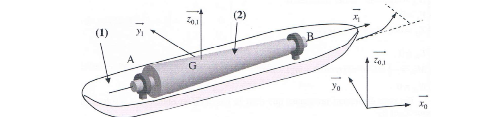
Paramétrage
- Rotation du navire \(R_1/R_0\) : \(\psi=\omega t\) avec \(\omega=\dfrac{V}{R}\), autour de l'axe vertical \(\vec z_0=\vec z_1\).
- Rotation du rotor \(R_2/R_1\) : \(\varphi=\Omega t\) avec \(\Omega=\dfrac{\pi N}{30}\), autour de l'axe \(\vec x_1\) de l'arbre.
- \(\overrightarrow{AG}=L\vec x_1\), \(\overrightarrow{AB}=3L\vec x_1\) : \(G\) est à \(L\) de \(A\), \(B\) est à \(2L\) de \(G\).
- Le rotor est un solide de révolution : \(\bar{\bar I}_{(G,2)}=\begin{pmatrix}A&0&0\\0&B&0\\0&0&B\end{pmatrix}_{\vec b_1}\) avec \(A\) l'inertie axiale.
Données numériques
| Grandeur | Valeur | Grandeur | Valeur |
|---|---|---|---|
| Masse \(m\) | 2 t = 2000 kg | Vitesse du navire \(V\) | 10 m·s⁻¹ |
| Rayon de giration \(a\) | 0,3 m | Rayon du virage \(R\) | 200 m |
| Distance \(L\) | 1 m (\(AB=3\) m) | Vitesse du rotor \(N\) | 4000 tr/min |
Application : \(\Omega=\dfrac{\pi\times4000}{30}\approx418{,}9\) rad·s⁻¹, \(\omega=\dfrac{10}{200}=0{,}05\) rad·s⁻¹.
4. Les questions
Q1Efforts de liaison en \(A\) et \(B\) : PFD appliqué au rotor 2
Démarche
- Torseur dynamique en \(G\) : calculer \(\vec\Gamma_G\) et \(\vec\delta_G\) (le rotor a deux rotations : \(\dot\psi\) et \(\dot\varphi\)).
- Bilan des actions : poids en \(G\), réactions \(A\) et \(B\) ramenées en \(G\).
- PFD en \(G\) : résultante, puis moment (on projette dans \(\vec b_1\)).
- Résoudre le système linéaire pour \(X_A\), \(Y_A\), \(Z_A\), \(Y_B\), \(Z_B\).
Torseur dynamique. Le centre d'inertie \(G\) décrit le cercle de rayon \(R\) à vitesse \(V\) constante : \(\vec\Gamma_G=\dfrac{V^2}{R}\,\vec y_1\) (vers l'intérieur du virage, bâbord). Donc :
\[\vec R\{\mathcal D_{2/0}\}=m\,\frac{V^2}{R}\,\vec y_1\]Moment : \(\vec\sigma_G=\bar{\bar I}_{(G,2)}\cdot\vec\Omega_{2/0}\) avec \(\vec\Omega_{2/0}=\Omega\,\vec x_1+\omega\,\vec z_1\), soit \(\vec\sigma_G=A\Omega\,\vec x_1+B\omega\,\vec z_1\) (la base \(\vec b_1\) est liée au navire, pas au spin). Dans \(R_0\) : \(\dfrac{d\vec x_1}{dt}=\omega\,\vec z_1\wedge\vec x_1=\omega\,\vec y_1\) et \(\dfrac{d\vec z_1}{dt}=\vec 0\) : donc
\[\vec\delta_{G\in2/0}=A\Omega\omega\,\vec y_1\]Pour un rotor de révolution d'axe \(\vec x_1\) : \(A=\dfrac{ma^2}{2}\) dans le corrigé officiel (voir encadré ci-dessous), d'où \(\vec\delta_G=\dfrac{ma^2}{2}\,\Omega\omega\,\vec y_1\).
Bilan des actions (\(\vec b_1\)) :
\[\{\mathcal T_{\text{pes}\to2}\}_G=\begin{Bmatrix}-mg\,\vec z_1\\ \vec 0\end{Bmatrix}\qquad \{\mathcal T_{A\to2}\}_G=\begin{Bmatrix}X_A\vec x_1+Y_A\vec y_1+Z_A\vec z_1\\ LZ_A\,\vec y_1-LY_A\,\vec z_1\end{Bmatrix}\qquad \{\mathcal T_{B\to2}\}_G=\begin{Bmatrix}Y_B\vec y_1+Z_B\vec z_1\\ -2LZ_B\,\vec y_1+2LY_B\,\vec z_1\end{Bmatrix}\]Les moments viennent de \(\overrightarrow{GA}=-L\vec x_1\) et \(\overrightarrow{GB}=2L\vec x_1\). Le palier \(B\) n'a pas d'effort axial ni de moment (linéaire annulaire).
PFD (\(\{\mathcal T_{\text{ext}\to2}\}_G=\{\mathcal D_{2/0}\}_G\), projeté dans \(\vec b_1\)) :
\[\begin{cases} 0=X_A\\[2pt] \dfrac{mV^2}{R}=Y_A+Y_B\\[2pt] 0=Z_A+Z_B-mg\\[2pt] \dfrac{ma^2}{2}\,\Omega\omega=L\,Z_A-2L\,Z_B\\[2pt] 0=2L\,Y_B-L\,Y_A \end{cases}\]Résolution. \(X_A=0\). De la dernière équation, \(Y_A=2Y_B\) ; avec la résultante en \(y_1\) : \(Y_B=\dfrac{mV^2}{3R}\), \(Y_A=\dfrac{2mV^2}{3R}\).
En \(z_1\) : \(Z_B=mg-Z_A\). Dans l'équation de moment, \(\dfrac{ma^2}{2}\Omega\omega=LZ_A-2LZ_B=L(mg-Z_B)-2LZ_B=L(mg-3Z_B)\), donc :
\[Z_B=\dfrac{mg}{3}-\dfrac{ma^2\,\Omega\,\omega}{6L}\qquad\qquad Z_A=\dfrac{2mg}{3}+\dfrac{ma^2\,\Omega\,\omega}{6L}\]Avec \(\omega=V/R\) : le terme correctif vaut \(\dfrac{ma^2V\Omega}{6RL}\).
Le corrigé prend \(\Omega=133\pi\approx417{,}8\) rad·s⁻¹ (valeur arrondie de \(4000\pi/30=418{,}9\)). Avec \(418{,}9\) on trouve \(Z_A\approx13\,708\) N et \(Z_B\approx5\,912\) N : écart d'arrondi.
Si l'on prend \(A=ma^2=180\) kg·m² : \(\vec\delta_G\) double, \(Z_B\approx6540-1257\approx5283\) N et \(Z_A\approx14337\) N. Le sens physique ne change pas, seule la valeur du couple gyroscopique change.
5. Lecture physique : pourquoi le virage change les paliers
Sans virage (\(\omega=0\)) : \(Y_A=Y_B=0\), \(Z_B=mg/3=6540\) N, \(Z_A=2mg/3=13080\) N. Le centre d'inertie est au tiers de \(AB\) et le rotor se comporte comme une poutre sur deux appuis.
Pendant le virage, le couple gyroscopique vaut \(\dfrac{ma^2}{2}\Omega\omega\approx1\,885\) N·m (avec \(A=ma^2/2\)). Il se traduit en efforts verticaux de \(\dfrac{1\,885}{3L}\approx628\) N : il décharge le palier \(B\) de 628 N et surcharge \(A\) d'autant. De plus, le virage crée un effort latéral \(Y_A+Y_B=mV^2/R=1000\) N, absent en ligne droite.
4. Éolienne bipale — moment cinétique et dynamique avec balourd
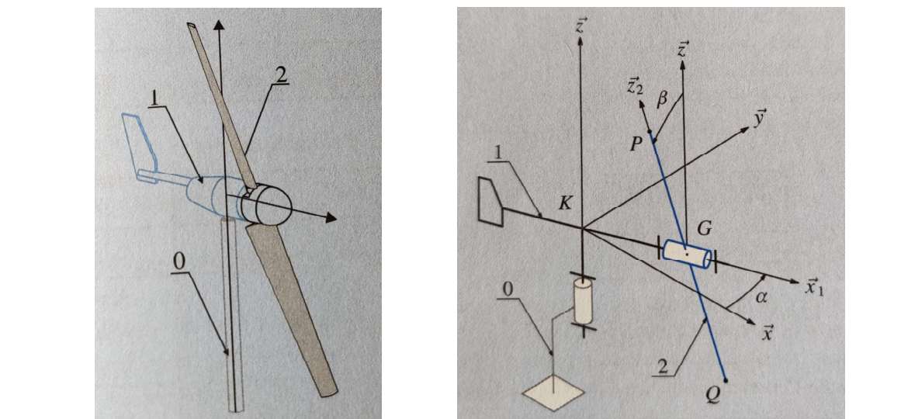
La girouette 1 est en rotation pure autour de \((K,\vec z)\) avec \(K\) fixe : \(\vec\sigma_{K\in1/0}=J\dot\alpha\,\vec z\).
\(K\) est fixe dans \(R_0\) : \(\vec\sigma_{K\in2/0}=\bar{\bar I}_{(K,2)}.\vec\Omega_{2/0}\). Huygens (\(\overrightarrow{KG}=a\vec x_2\), donc \((a,0,0)\) dans la formule) : \(\bar{\bar I}_{(K,2)}=\mathrm{diag}(A,\,B+Ma^2,\,C+Ma^2)\) (le décalage purement axial ne modifie pas la composante axiale \(A\)).
Composition des rotations : \(\vec\Omega_{2/0}=\dot\beta\vec x_2+\dot\alpha\vec z\), et \(\vec z=\sin\beta\,\vec y_2+\cos\beta\,\vec z_2\) (changement de base \(\beta\) autour de \(x_1=x_2\)), soit \(\vec\Omega_{2/0}=\dot\beta\vec x_2+\dot\alpha\sin\beta\,\vec y_2+\dot\alpha\cos\beta\,\vec z_2\).
Astuce du cours : \(\vec z\) est fixe dans \(R_0\) ⟹ \(\vec z\cdot\vec\delta_K=\dfrac{d}{dt}(\vec z\cdot\vec\sigma_K)\) sans avoir à dériver le vecteur \(\vec\sigma_K\) en entier. \(\vec z\cdot\vec\sigma_K=(B+Ma^2)\dot\alpha\sin^2\beta+(C+Ma^2)\dot\alpha\cos^2\beta\) (en utilisant \(\vec y_2\cdot\vec z=\sin\beta\), \(\vec z_2\cdot\vec z=\cos\beta\), \(\vec x_2\cdot\vec z=0\)).
3 est un point matériel \(P\) : \(\vec\sigma_{K\in3/0}=\overrightarrow{KP}\wedge m\vec V_{P/0}\), avec \(\overrightarrow{KP}=a\vec x_2+b\vec z_2\). Vitesse de \(P\) : en dérivant \(\vec x_2,\vec z_2\) via \(\vec\Omega_{2/0}\) (mêmes composantes qu'en Q2) :
\[\vec V_{P/0}=b\dot\alpha\sin\beta\,\vec x_2+(a\dot\alpha\cos\beta-b\dot\beta)\vec y_2-a\dot\alpha\sin\beta\,\vec z_2\]D'où, par produit vectoriel \((a,0,b)\wedge m(b\dot\alpha\sin\beta,\,a\dot\alpha\cos\beta-b\dot\beta,\,-a\dot\alpha\sin\beta)\) :
Régulateur centrifuge : correction détaillée
Un exercice du TD « Principe fondamental de la dynamique » (CPGE PT, S2I). Un régulateur de vitesse d'une machine thermique : la masselotte 2 s'écarte sous l'effet de la rotation et comprime un ressort 3 par l'intermédiaire d'un tiroir. Le but est de dimensionner la raideur du ressort. Pour chaque question : ce qu'elle demande, la démarche, le calcul complet, et les encadrés de méthode.
1. Avant de commencer : l'essentiel en quelques lignes
Le moment dynamique et la liaison pivot
Le PFD appliqué à un solide \(\Sigma\) s'écrit en moment en un point \(P\) : \(\sum\vec M_P(\text{ext})=\vec\delta_{P\in\Sigma/0}\). Le moment dynamique \(\vec\delta_{A}\) est la dérivée du moment cinétique \(\vec\sigma_A\) (calculé dans le repère de référence).
- Liaison pivot d'axe \((A,\vec z_1)\) : elle ne transmet aucun moment selon son propre axe. Projeter l'équation de moment sur \(\vec z_1\) élimine donc les réactions inconnues en \(A\).
- Deux contacts symétriques : un même ressort agit sur deux positions symétriques de la masselotte. Leurs effets s'additionnent (les termes en poids s'annulent).
2. La démarche en 5 étapes
- Graphe des liaisons : repérer qui est lié à qui et où agissent les efforts (question 1).
- Moment cinétique en \(A\) de la masselotte 2 (question 2), puis sa dérivée (question 3).
- Projection sur \(\vec z_1\) du PFD : équation de moment qui ne contient plus le pivot (question 4).
- Isoler le ressort 3 pour trouver \(F_R\) à partir de l'effort \(X_{32}\) (question 5).
- Dimensionner la raideur (question 6).
3. Le modèle et les données
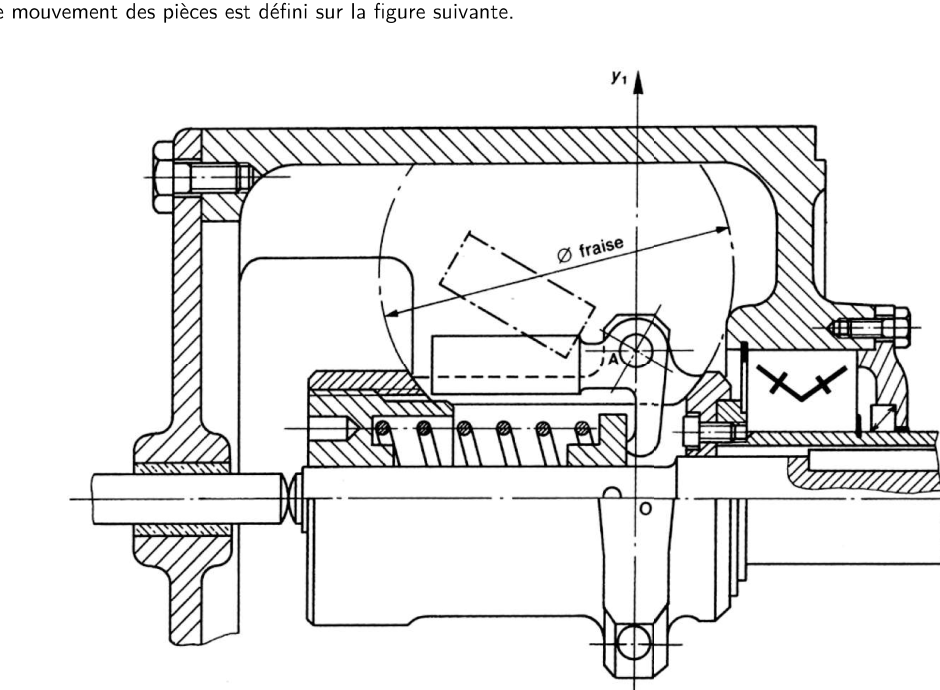
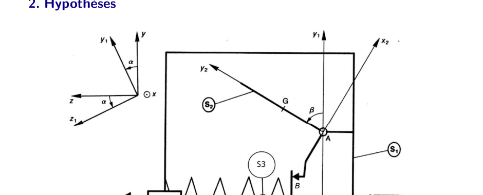
Hypothèses (à garder en tête)
- \(\overrightarrow{OA}=a\,\vec y_1\), \(\overrightarrow{AG}=b\,\vec y_2\), \(\overrightarrow{BA}=c\,\vec x_2\).
- Matrice d'inertie de la masselotte en \(A\), dans \(\vec b_2=(\vec x_2,\vec y_2,\vec z_2)\) : \(\bar{\bar I}_{(A,2)}=\begin{pmatrix}A&-F&0\\-F&B&0\\0&0&C\end{pmatrix}\).
- Le bras 1 tourne autour de \((O,\vec x)\) à la vitesse \(\dot\alpha\) ; la masselotte 2 tourne par rapport à 1 autour de \((A,\vec z_1)\) à la vitesse \(\dot\beta\).
- On admet que \(\beta\) est constant pendant la phase étudiée : \(\dot\beta=\ddot\beta=0\).
- Pas de valeurs numériques dans l'énoncé : les résultats restent littéraux.
4. Les questions
Q1Graphe des liaisons
Q2Moment cinétique en \(A\) de la masselotte 2
Démarche
- Formule générale : \(\vec\sigma_{A}=\bar{\bar I}_{(A,2)}\cdot\vec\Omega_{2/0}+m\,\overrightarrow{AG}\wedge\vec V_{A\in2/0}\).
- Rotation : \(\vec\Omega_{2/0}=\dot\alpha\,\vec x+\dot\beta\,\vec z_1\). Dans \(\vec b_2\), avec \(\vec x=\cos\beta\,\vec x_2-\sin\beta\,\vec y_2\) : \(\vec\Omega_{2/0}=(\dot\alpha\cos\beta,\ -\dot\alpha\sin\beta,\ \dot\beta)\).
- Vitesse de \(A\) : \(A\) est porté par le bras 1 (\(\overrightarrow{OA}=a\vec y_1\)) et \(A\) est le pivot de 2 par rapport à 1, donc \(\vec V_{A\in2/0}=\vec V_{A\in1/0}=\dot\alpha\,\vec x\wedge a\vec y_1=a\dot\alpha\,\vec z_2\).
- \(\overrightarrow{AG}=b\vec y_2\) : \(\overrightarrow{AG}\wedge\vec V_A=b\,a\dot\alpha\,\vec x_2\).
Composante par composante :
\[\text{(}x_2\text{)}:\ A\dot\alpha\cos\beta+F\dot\alpha\sin\beta+mab\dot\alpha\qquad\text{(}y_2\text{)}:\ -F\dot\alpha\cos\beta-B\dot\alpha\sin\beta\qquad\text{(}z_2\text{)}:\ C\dot\beta\]Q3Projection du moment dynamique sur \(\vec z_1\)
Démarche
- Formule : \(\vec\delta_{A\in2/0}=\big[\tfrac{d}{dt}\vec\sigma_A\big]_R+\vec V_{A/0}\wedge m\vec V_{G\in3/0}\) (formule du cours, à appliquer ici avec le bon point). Le terme \(\vec V_{A/0}\wedge m\vec V_{G}\) ne contribue pas sur \(\vec z_1\) : \(\vec V_{A/0}=a\dot\alpha\,\vec z_1\) est colinéaire à \(\vec z_1\), donc son produit vectoriel avec n'importe quel vecteur est orthogonal à \(\vec z_1\).
- Astuce : \(\vec\delta\cdot\vec z_1=\dfrac{d}{dt}(\vec\sigma_A\cdot\vec z_1)-\vec\sigma_A\cdot\Big[\dfrac{d\vec z_1}{dt}\Big]_R\), car \(\vec z_1\) n'est pas fixe dans \(R\).
- Dérivée de \(\vec z_1\) dans \(R\) : \(\big[\tfrac{d\vec z_1}{dt}\big]_R=\dot\alpha\,\vec x\wedge\vec z_1=\dot\alpha(-\sin\beta\,\vec x_2-\cos\beta\,\vec y_2)\), soit \((-\dot\alpha\sin\beta,\ -\dot\alpha\cos\beta,\ 0)_{\vec b_2}\).
Premier terme : \(\dfrac{d}{dt}(\sigma_A\cdot z_1)=\dfrac{d}{dt}(C\dot\beta)=C\ddot\beta\).
Second terme : \(\vec\sigma_A\cdot\big[\tfrac{d\vec z_1}{dt}\big]_R=\dot\alpha\big[-\sin\beta\cdot\dot\alpha(A\cos\beta+F\sin\beta+mab)-\cos\beta\cdot(-\dot\alpha)(F\cos\beta+B\sin\beta)\big]\) \(=\dot\alpha^2\big[(B-A)\sin\beta\cos\beta+F(\cos^2\beta-\sin^2\beta)-mab\sin\beta\big]\).
\[\vec\delta_{A\in2/0}\cdot\vec z_1=C\ddot\beta+\dot\alpha^2\Big[mab\sin\beta+(A-B)\cos\beta\sin\beta+F(\sin^2\beta-\cos^2\beta)\Big]\]Q4Équation de moment sur \(\vec z_1\) : effort \(X_{32}\)
Démarche
- On isole 2 et on fait le bilan : effort \(X_{32}\vec x\) du tiroir 3 en \(B\) (normal au contact), liaison pivot en \(A\) (inconnue), poids de 2 (vertical) en \(G\).
- On ramène les actions en \(A\) et on projette sur \(\vec z_1\) : la liaison pivot en \(A\) n'apporte aucun moment selon son axe.
- Moment de l'effort du tiroir : \(\overrightarrow{AB}=-c\vec x_2\), \(\overrightarrow{AB}\wedge X_{32}\vec x\cdot\vec z_1=c\,X_{32}\sin\beta\).
- Moment du poids : \(\overrightarrow{AG}=b\vec y_2\) ; le poids projeté sur \(\vec z_1\) donne \(bmg\cos\alpha\sin\beta\) (résultat du corrigé).
En remplaçant \(\vec\delta\cdot\vec z_1\) par la réponse de Q3 :
\[X_{32}=\dfrac{\dot\alpha^2\big[mab\sin\beta+(A-B)\cos\beta\sin\beta+F(\sin^2\beta-\cos^2\beta)\big]-bmg\cos\alpha\sin\beta}{c\sin\beta}\]Q5Effort \(F_R\) du ressort
Démarche
- Isoler le tiroir 3. Bilan : actions du bâti 1 en \(O\), du solide 2 en \(B\) (\(X_{23}\)), en \(B'\) (\(X_{2'3}\)) et \(\{\mathcal T_{res\to3}\}\) du ressort (\(F_R\vec x\)).
- PFD en translation suivant \(\vec x\) : \(\sum\vec R\cdot\vec x=m\ddot x\). Comme \(\beta\) est constant, \(x\) est constante : \(\ddot x=0\).
- Deux contacts symétriques : la masselotte 2 touche le tiroir en \(B\) et en \(B'\), avec \(\alpha'=\alpha+\pi\), donc \(\cos\alpha'=-\cos\alpha\) et \(\beta'=\beta\).
- \(F_R=-X_{23}-X_{2'3}=X_{32}+X_{32'}\).
Pour le premier contact : \(X_{32}=\dfrac{\delta-bmg\cos\alpha\sin\beta}{c\sin\beta}\), avec \(\delta\) la partie en \(\dot\alpha^2\). Pour le second : \(X_{32'}=\dfrac{\delta-bmg\cos\alpha'\sin\beta}{c\sin\beta}=\dfrac{\delta+bmg\cos\alpha\sin\beta}{c\sin\beta}\). La somme élimine les termes en poids :
\[F_R=X_{32}+X_{32'}=\dfrac{2\delta}{c\sin\beta}\]Q6Dimensionnement de la raideur
Démarche
- Loi du ressort linéaire : \(F_R=k\,\Delta l\).
- Condition d'allongement : \(\Delta l=\dfrac{F_R}{k}\le\Delta l_{max}\).
- On en tire la raideur minimale.
Comme \(F_R\) dépend de \(\dot\alpha\), la condition la plus sévère est obtenue à la vitesse maximale de régulation.
5. À retenir
- Moment cinétique en \(A\) : \(\vec\sigma_A=\bar{\bar I}\cdot\vec\Omega+m\overrightarrow{AG}\wedge\vec V_A\) (le second terme est souvent oublié).
- Projection sur l'axe du pivot : \(\vec z_1\) élimine les réactions du pivot \((A,\vec z_1)\).
- Dérivée d'une projection : penser au terme \(\vec\sigma\cdot\dfrac{d\vec u}{dt}\) quand le vecteur \(\vec u\) tourne.
- Deux contacts symétriques : l'effort du ressort est \(2\delta/(c\sin\beta)\), sans le poids.
Équilibreuse : correction détaillée
Un exercice du TD « Principe fondamental de la dynamique » (CPGE PT, S2I). L'arbre 1 porte une roue 2 mal équilibrée. On mesure les efforts dans les paliers, puis on en déduit la position du défaut de la roue, puis on place deux masselottes pour l'annuler. Pour chaque question : ce qu'elle demande, la démarche, le calcul complet, et les encadrés de méthode.
1. Avant de commencer : l'essentiel en quelques lignes
Le principe fondamental de la dynamique (PFD)
Pour un ensemble \(\Sigma\), la somme des torseurs des actions extérieures est égale au torseur dynamique : \(\{\mathcal T_{\text{ext}\to\Sigma}\}=\{\mathcal D_{\Sigma/0}\}\). Le torseur dynamique a deux parties :
- la résultante dynamique \(\vec R\{\mathcal D\}=m\,\vec\Gamma_G\) (accélération du centre d'inertie) ;
- le moment dynamique \(\vec\delta_P\) (variation du moment cinétique), à calculer en un point \(P\) fixe ou en \(G\).
Le balourd
Une roue « mal équilibrée » a son centre d'inertie \(G_2\) décalé de l'axe de rotation (distance \(\rho\)) et des produits d'inertie \(E\) et \(F\) non nuls. En tournant, elle fait naître dans les paliers des efforts sinusoïdes en fonction de l'angle. C'est ce que mesurent les deux capteurs. Le problème inverse est donc : à partir de ces mesures, retrouver \(\rho\), \(\alpha\), \(E\), \(F\), puis placer les masselottes.
2. La démarche en 5 étapes
- Isoler \(\Sigma=\{1+2\}\) et faire le bilan des actions (paliers \(O\) et \(A\), courroie, poids). Question 1.
- Calculer le torseur dynamique de la roue 2 (accélération de \(G_2\), moment en \(B\) puis en \(O\)). Question 1.
- Projeter la résultante et le moment, puis isoler \(Z_O\), \(Z_A\) (capteurs). Question 1.
- Inverser avec les valeurs \(\theta=0\) et \(\theta=\pi/2\) pour trouver \(\rho\), \(\alpha\), \(E\), \(F\). Questions 2 et 3.
- Équilibrer : conditions statiques et dynamiques pour deux masselottes 3 et 4. Questions 4 et 5.
3. Le modèle et les données
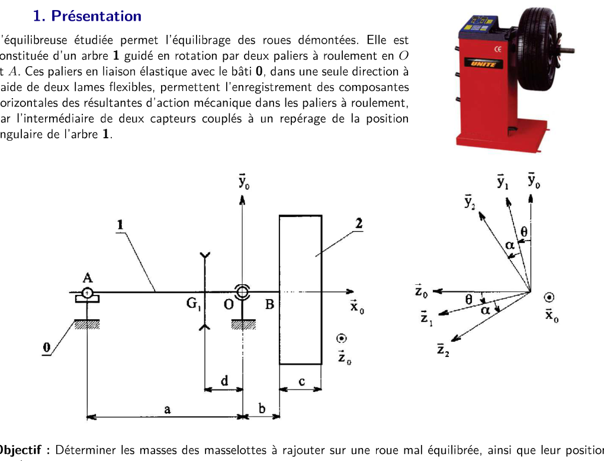
Hypothèses (à garder en tête)
- \(R_0\) est lié au bâti, \(\vec y_0\) est vertical ascendant. \(\theta=(\vec y_0,\vec y_1)\), et \(\dot\theta=\omega=\text{cste}\) : \(\ddot\theta=0\).
- L'arbre 1 (avec sa poulie) est équilibré : \(G_1\) est sur l'axe, \(\vec x_0\) est axe principal d'inertie. Sa contribution au torseur dynamique est donc nulle.
- La courroie exerce sur la poulie \(\{\mathcal T_{C\to P}\}=\left\{\begin{smallmatrix}C_m\,\vec x_0\\ -T\,\vec y_0\end{smallmatrix}\right\}\) en \(G_1\).
- La roue 2 est fixée sur l'arbre, de masse \(m_2\), avec \(\overrightarrow{BG_2}=h\,\vec x_0+\rho\,\vec z_2\). L'angle \(\alpha=(\vec y_1,\vec y_2)\) est constant mais inconnu.
- Matrice d'inertie de la roue en \(B\) dans \((\vec x_0,\vec y_2,\vec z_2)\) : \(\bar{\bar I}_{(B,2)}=\begin{pmatrix}A&-F&-E\\-F&B&-D\\-E&-D&C\end{pmatrix}\).
Données numériques
| Grandeur | Valeur | Grandeur | Valeur |
|---|---|---|---|
| \(m_2\) | 18 kg | \(\omega=\dot\theta\) | 60 rad·s⁻¹ |
| \(a\) | 460 mm | \(b\) | 80 mm |
Les courbes et le tableau des mesures sont donnés à la question 3 (image juste au-dessus).
4. Les questions
Q1Efforts dans les paliers : PFD sur \(\{1+2\}\) en \(O\)
Démarche
- On isole \(\Sigma=\{1+2\}\) et on écrit les torseurs extérieurs : paliers \(O\) (\(X_O,Y_O,Z_O\)), \(A\) (\(Y_A,Z_A\), pas d'effort axial), courroie, poids de 1 et de 2.
- On calcule le torseur dynamique \(\{\mathcal D_{\Sigma/0}\}=\{\mathcal D_{1/0}\}+\{\mathcal D_{2/0}\}\). Pour l'arbre : \(\{\mathcal D_{1/0}\}=\{0\}\) (équilibré, \(\ddot\theta=0\)).
- Pour la roue : \(\overrightarrow{OG_2}=(b+h)\vec x_0+\rho\vec z_2\). Comme \(\dot\theta=\omega\) est constant, \(\vec\Gamma_{G_2/0}=-\rho\omega^2\vec z_2\).
- On projette la résultante et le moment, et on isole chaque inconnue.
Résultante (projection sur \(\vec x_0,\vec y_0,\vec z_0\)) :
\[m_2\vec\Gamma_{G_2}=-m_2\rho\omega^2\vec z_2=-m_2\rho\omega^2\big[-\sin(\alpha{+}\theta)\vec y_0+\cos(\alpha{+}\theta)\vec z_0\big]\] \[X_O=0,\qquad Y_O+Y_A-T-(m_1+m_2)g=m_2\rho\omega^2\sin(\alpha{+}\theta),\qquad Z_O+Z_A=-m_2\rho\omega^2\cos(\alpha{+}\theta)\]Moment dynamique en \(B\) : \(\sigma_B=\bar{\bar I}_{(B,2)}\,\omega\vec x_0=\omega\,(A\vec x_0-F\vec y_2-E\vec z_2)\). Comme \(\vec y_2\) et \(\vec z_2\) tournent à \(\omega\) autour de \(\vec x_0\), leur dérivée donne : \(\vec\delta_B=\omega^2\,(E\,\vec y_2-F\,\vec z_2)\).
Transport en \(O\) : \(\vec\delta_O=\vec\delta_B+\overrightarrow{OB}\wedge m_2\vec\Gamma_{G_2}\), avec \(\overrightarrow{OB}=b\vec x_0\) : \(b\vec x_0\wedge(-m_2\rho\omega^2\vec z_2)=bm_2\rho\omega^2\vec y_2\). Donc :
\[\vec\delta_{O}=\omega^2\big[(E+bm_2\rho)\,\vec y_2-F\,\vec z_2\big]\]On projette sur \(\vec y_0,\vec z_0\) avec \(\vec y_2=\cos(\alpha{+}\theta)\vec y_0+\sin(\alpha{+}\theta)\vec z_0\) et \(\vec z_2=-\sin(\alpha{+}\theta)\vec y_0+\cos(\alpha{+}\theta)\vec z_0\). Les équations de moment sont : \(\vec z_0\) donne \(-aY_A+dT+m_1gd-m_2g(b+h)=\delta_{O}\cdot\vec z_0\), et \(\vec y_0\) donne \(aZ_A=\delta_O\cdot\vec y_0\). Le moment selon \(\vec y_0\) ne contient que \(Z_A\) (bras \(a\)), ce qui isole \(Z_A\) directement.
Q2Position de la roue : \(\rho\), \(\alpha\), \(E\), \(F\) à partir des capteurs
Démarche
- Pour \(\theta=0\) : on écrit \(Z_A(0)\) et \(Z_O(0)\) (équations 1 et 2). La somme élimine \(E\) et \(F\).
- Pour \(\theta=\pi/2\) : on fait de même (équations 4 et 5). La somme donne une deuxième relation indépendante.
- On combine les deux sommes : \(\rho\) vient du module, \(\alpha\) du rapport des deux sommes.
- Enfin, les combinaisons \((1)\sin\alpha+(4)\cos\alpha\) et \((1)\cos\alpha-(4)\sin\alpha\) donnent \(F\) et \(E\).
Pour \(\theta=0\) : \(Z_A(0)=\dfrac{\omega^2}{a}[(E+m_2\rho b)\cos\alpha+F\sin\alpha]\) (1), \(Z_O(0)=-\dfrac{\omega^2}{a}[(E+m_2\rho(a+b))\cos\alpha+F\sin\alpha]\) (2). Par somme : \(Z_A(0)+Z_O(0)=-m_2\rho\omega^2\cos\alpha\) (3).
Pour \(\theta=\pi/2\) : \(Z_A(\tfrac\pi2)=\dfrac{\omega^2}{a}[-(E+m_2\rho b)\sin\alpha+F\cos\alpha]\) (4), \(Z_O(\tfrac\pi2)=-\dfrac{\omega^2}{a}[-(E+m_2\rho(a+b))\sin\alpha+F\cos\alpha]\) (5). Par somme : \(Z_A(\tfrac\pi2)+Z_O(\tfrac\pi2)=m_2\rho\omega^2\sin\alpha\) (6).
Module : \((3)^2+(6)^2\) donne \(\rho\). Rapport : \((6)/(3)\) donne \(\tan\alpha\). Puis :
\[\rho=\dfrac{1}{m_2\omega^2}\sqrt{\big(Z_A(0)+Z_O(0)\big)^2+\big(Z_A(\tfrac\pi2)+Z_O(\tfrac\pi2)\big)^2}\qquad \tan\alpha=-\dfrac{Z_A(\tfrac\pi2)+Z_O(\tfrac\pi2)}{Z_A(0)+Z_O(0)}\] \[F=\dfrac{a}{\omega^2}\Big(Z_A(0)\sin\alpha+Z_A(\tfrac\pi2)\cos\alpha\Big)\qquad E=\dfrac{a}{\omega^2}\Big(Z_A(0)\cos\alpha-Z_A(\tfrac\pi2)\sin\alpha\Big)-m_2\rho b\]Q3Application numérique : \(\rho\), \(\alpha\), \(E\), \(F\)
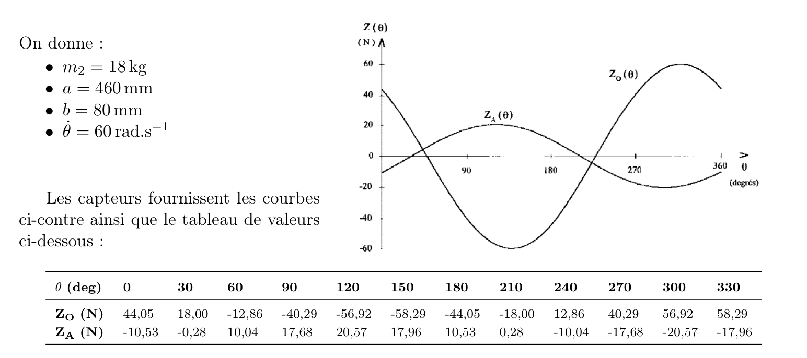
Mesures utilisées (tableau) : \(Z_O(0)=44{,}05\) N, \(Z_A(0)=-10{,}53\) N, \(Z_O(90°)=-40{,}29\) N, \(Z_A(90°)=17{,}68\) N.
\[S_0=Z_A(0)+Z_O(0)=33{,}52\ \text N\qquad S_p=Z_A(\tfrac\pi2)+Z_O(\tfrac\pi2)=-22{,}61\ \text N\] \[\rho=\dfrac{\sqrt{33{,}52^2+22{,}61^2}}{18\times 60^2}=\dfrac{40{,}43}{64\,800}\approx 6{,}2\times10^{-4}\ \text m\approx 0{,}62\ \text{mm}\] \[\alpha:\ \tan\alpha=\dfrac{-22{,}61}{-33{,}52}\ \text{avec}\ \cos\alpha<0\ \Rightarrow\ \alpha\approx 214^\circ\]Avec \(K_0=Z_A(0)\,a/\omega^2=-10{,}53\times0{,}46/3600\approx-1{,}35\times10^{-3}\) kg·m² et \(K_p=Z_A(\tfrac\pi2)\,a/\omega^2=17{,}68\times0{,}46/3600\approx2{,}26\times10^{-3}\) kg·m², avec \(\cos\alpha\approx-0{,}829\), \(\sin\alpha\approx-0{,}559\) :
\[E+m_2\rho b=K_0\cos\alpha-K_p\sin\alpha\approx2{,}38\times10^{-3}\ \Rightarrow\ E\approx2{,}38\times10^{-3}-0{,}89\times10^{-3}\approx1{,}5\times10^{-3}\ \text{kg·m}^2\] \[F=K_0\sin\alpha+K_p\cos\alpha\approx-1{,}1\times10^{-3}\ \text{kg·m}^2\]Les courbes mesurées sont bien des sinusoïdes : le graphique ci-dessous compare les mesures à la sinusoïde \(P\cos\theta+Q\sin\theta\).
Q4Conditions d'équilibrage de la roue
Démarche
- Équilibrage statique : le centre d'inertie \(G\) de l'ensemble doit être sur l'axe \((B,\vec x_0)\), donc \(\overrightarrow{BG}\cdot\vec y_2=\overrightarrow{BG}\cdot\vec z_2=0\).
- Équilibrage dynamique : l'axe doit être principal d'inertie, donc les produits d'inertie \(E'\) et \(F'\) de l'ensemble sont nuls.
- On projette les positions : \(\overrightarrow{BM_3}=-r\sin\beta_3\vec y_2+r\cos\beta_3\vec z_2\) et \(\overrightarrow{BM_4}=c\vec x_0-r\sin\beta_4\vec y_2+r\cos\beta_4\vec z_2\).
Statique (\(G\) sur l'axe) :
\[(7):\ -m_3r\sin\beta_3-m_4r\sin\beta_4=0\qquad (8):\ m_2\rho+m_3r\cos\beta_3+m_4r\cos\beta_4=0\]Dynamique : la masselotte 3 est dans le plan \(B\) (bras axial nul), elle ne crée aucun produit d'inertie. Seule la masselotte 4, déportée de \(c\), en crée. On annule donc les produits d'inertie totaux :
\[(9):\ E+m_4cr\cos\beta_4=0\qquad (10):\ F-m_4cr\sin\beta_4=0\]Q5Valeurs numériques : \(m_3\), \(m_4\), \(\beta_3\), \(\beta_4\)
Démarche
- Les équations (9) et (10) donnent \(m_4\) et \(\beta_4\) : \(m_4cr\) est le module de \((E,F)\).
- Les équations (7) et (8) donnent \(m_3\) et \(\beta_3\) : on y remplace \(m_4\), \(\beta_4\), \(E\), \(F\).
Masselotte 4 : \(m_4cr=\sqrt{E^2+F^2}=\sqrt{(1{,}5\times10^{-3})^2+(1{,}1\times10^{-3})^2}\approx1{,}86\times10^{-3}\) kg·m², \(cr=0{,}18\times0{,}19=0{,}0342\) m², donc :
\[m_4=\dfrac{1}{cr}\sqrt{E^2+F^2}\approx 54\ \text g\] \[\cos\beta_4=-\dfrac{E}{m_4cr}\approx-0{,}80,\qquad \sin\beta_4=\dfrac{F}{m_4cr}\approx-0{,}60\ \Rightarrow\ \beta_4\approx216^\circ\]Masselotte 3 (déduite de (7) et (8)) : \(m_3\cos\beta_3\,cr=E-m_2\rho c\) et \(m_3\sin\beta_3\,cr=-F\), soit :
\[m_3=\dfrac{1}{cr}\sqrt{F^2+(E-m_2\rho c)^2}\approx36\ \text g\qquad \tan\beta_3=\dfrac{F}{m_2\rho c-E}\ \Rightarrow\ \beta_3\approx115^\circ\]Avec \(m_2\rho c=18\times0{,}62\times10^{-3}\times0{,}18\approx2{,}0\times10^{-3}\) kg·m², \(E-m_2\rho c\approx-0{,}5\times10^{-3}\) : \(\cos\beta_3<0\) et \(\sin\beta_3>0\), donc \(\beta_3\) est dans le 2ᵉ quadrant.
5. À retenir
- Torseur dynamique : \(\vec R=m\vec\Gamma_G\), \(\vec\delta\) à calculer au point fixe, ici \(B\) puis \(O\) par transport.
- Mesures : \(Z_O(\theta)\) et \(Z_A(\theta)\) sont des sinusoïdes ; \(\theta=0\) et \(\pi/2\) suffisent.
- Balourd : \(\rho\) (défaut de position), \(E\) et \(F\) (défauts d'inertie). Ce sont eux que les masselottes annulent.
- Équilibrage : une masselotte pour la statique (force), une pour la dynamique (couple). Résultat : \(m_3\approx36\) g à \(115^\circ\), \(m_4\approx54\) g à \(216^\circ\).